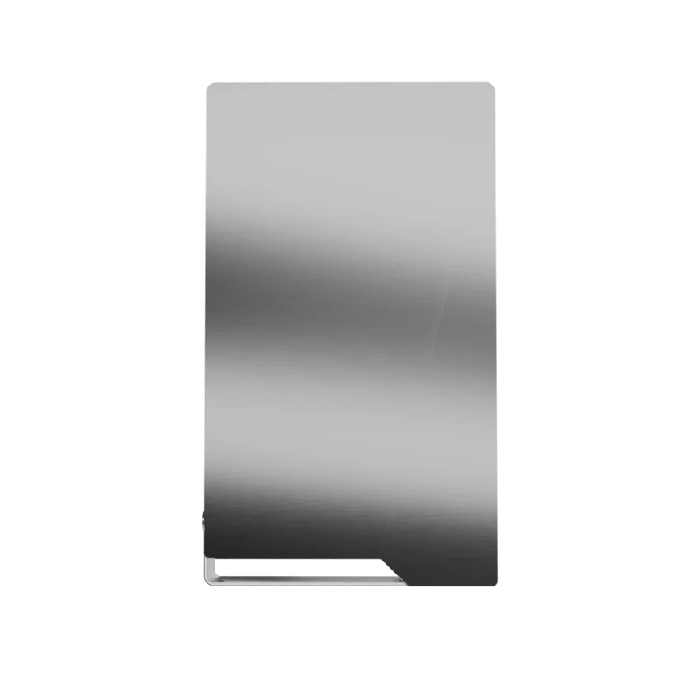
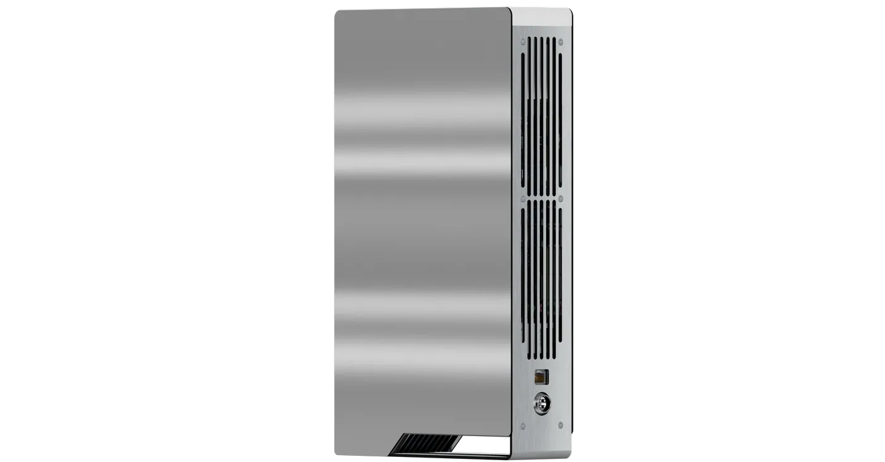

Play

What it is
A screenless US$3,499 personal AI computer marketed for local models and memory
What changed
Preorders opened October 5. Check the official page for current ordering availability and delivery dates; this is not an independent delivered-unit review
When to use it
It bundles a 24GB RTX PRO 4000 Blackwell GPU, 64GB RAM, 1TB SSD and preinstalled open-weight models
Limits & availability
Continuous context and privacy are vendor claims, not independent tests. Local inference doesn't establish that external-app communications stay offline